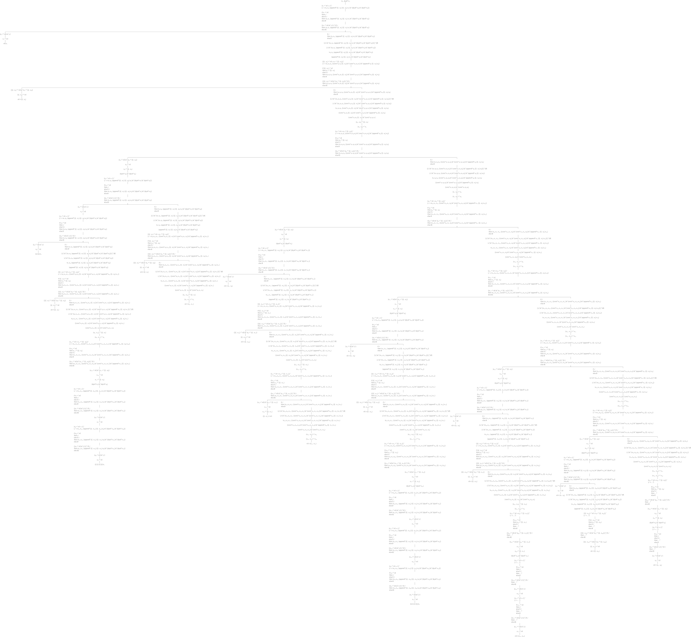

"MKSexpTest, protocol tests"
testACORN
| g |
g := [ :r | MKPredicateSexpCaro value: 'acorn' asCons value: r ]
asGoal.
self assert: g solutions equals: { $a } modulo: #asOrderedCollection.
"Export it."
self
export: (g asLogicComputationTreeLimitedTo: -1)
pathSuffix: 'sexp-acorn'
selector: #gtInspectorTreeUsingCanvas:

"MKSexpTest, protocol tests"
testAppendoForward
| g |
g := [ :l |
SexpTheory new appendo
value: #( #a #b #c ) asCons
value: #( #d #e ) asCons
value: l ] asGoal.
self
assert: g solutions
equals: #( a b c d e ) asCons
modulo: #asOrderedCollection.
"Export it."
self
export: (g asLogicComputationTreeLimitedTo: -1)
pathSuffix: 'sexp-appendo-forward'
selector: #gtInspectorTreeUsingCanvas:

"MKSexpTest, protocol tests"
testAppendoBackward
| g |
g := [ :l :r |
SexpTheory new appendo
value: l
value: r
value: #( a b c d e ) asCons ] asGoal.
self
assert: g solutions
equals: ({
#( nil #( #a #b #c #d #e ) ).
#( #( #a ) #( #b #c #d #e ) ).
#( #( #a #b ) #( #c #d #e ) ).
#( #( #a #b #c ) #( #d #e ) ).
#( #( #a #b #c #d ) #( #e ) ).
#( #( #a #b #c #d #e ) nil ) } collect: [ :each |
each collect: #asCons ])
modulo: #asOrderedCollection.
"Export it."
self
export: (g asLogicComputationTreeLimitedTo: -1)
pathSuffix: 'sexp-appendo-backward'
selector: #gtInspectorTreeUsingCanvas:

"MKSexpTest, protocol tests"
testDycko
| g |
g := [ :alpha | MKPredicateSexpDycko value: alpha ] asGoal.
self
export: (g asLogicComputationTreeLimitedTo: 20)
pathSuffix: 'sexp-dycko'
selector: #gtInspectorTreeUsingCanvas:
